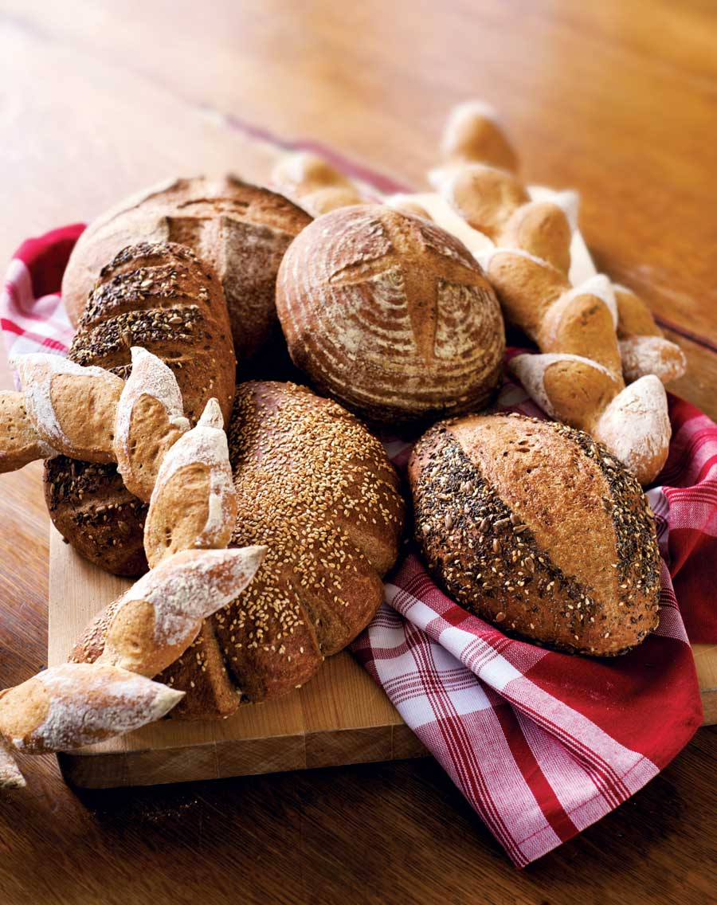
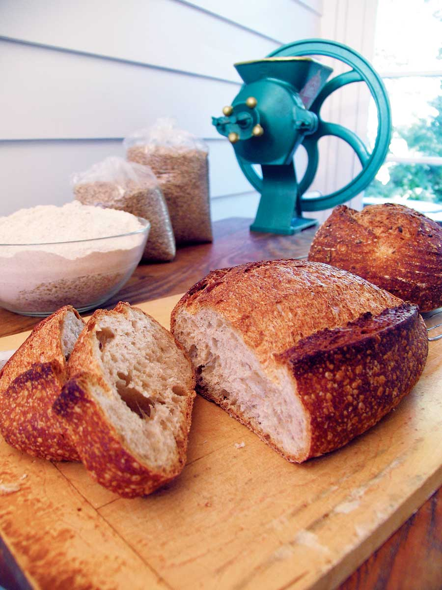
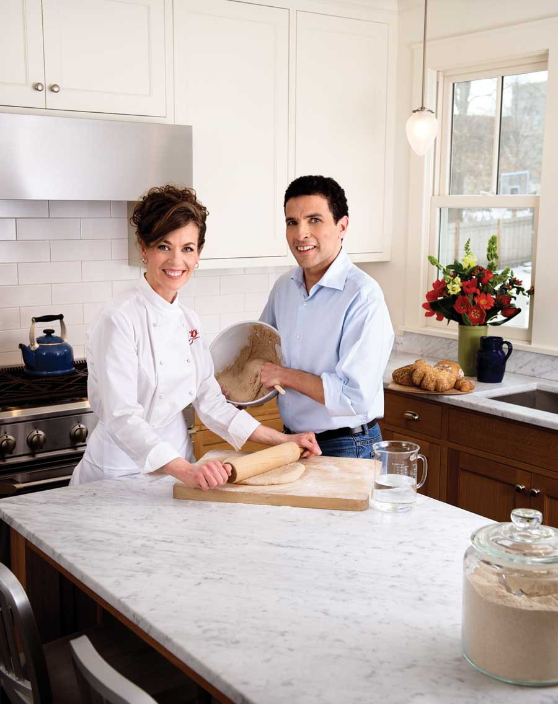
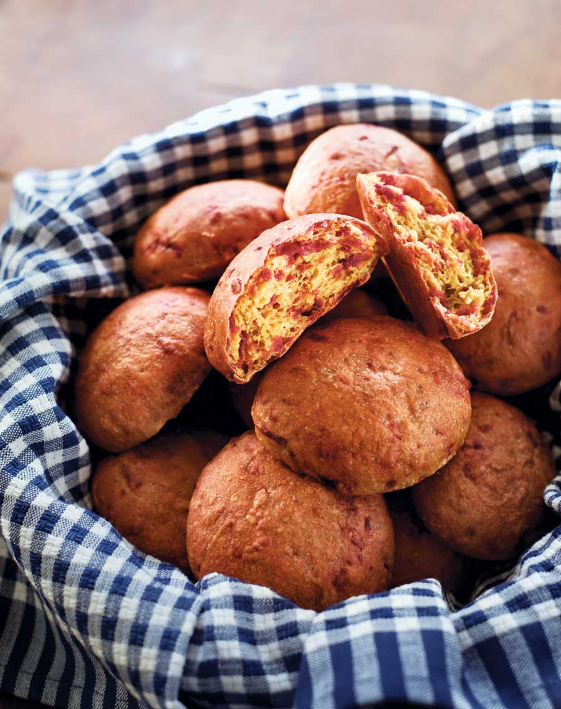

Healthy No-Knead Bread Recipes
With just five minutes a day of effort, you can make superhealthy breads with nutritious whole grains, fruits, vegetables, nuts and seeds. Plus, you’ll save big bucks on groceries.
By Jeff Hertzberg and Zoë François
December 2009/January 2010
The recipes here are excerpted from the new book Healthy Bread in Five Minutes a Day: 100 New Recipes Featuring Whole Grains, Fruits, Vegetables and Gluten-free Ingredients (Thomas Dunne Books, 2009). This is the much-anticipated sequel to the wildly popular Artisan Bread in Five Minutes a Day: The Discovery That Revolutionizes Home Baking, which taught us how to craft delicious and crusty artisan bread with just a few minutes of work. We brought you that basic technique in our article Five Minutes a Day for Fresh-baked Bread. Now you’ll be able to use the no-knead storage dough method with even healthier recipes. To order either of the fabulous cookbooks (and get a bunch more yummy-but-easy recipes!), visit Mother Earth News Shopping. If you have questions about these recipes, please post them to the comments section at the end of this article, and the baking experts at King Arthur Flour will answer them.
Here’s the secret to having fresh whole grain breads whenever you want them: Quickly mix enough ingredients for many loaves, then let the dough sit for two hours. Now you can shape and bake a loaf of bread, or you can refrigerate the dough to use over the next couple of weeks. Whenever you want a crusty loaf, just tear off a piece of the dough and shape it into a loaf. Let it rise for 90 minutes, and then bake it. Your house will smell like a bakery, and your family and friends will love you for it.
Only Five Minutes a Day
In writing our first book, we wanted to discard everything that was intimidating about baking, and make the process fast enough to fit into people’s busy lives. Artisan Bread in Five Minutes a Day replaced the time-consuming traditional yeast method with something quicker, without compromising quality. The technique called for mixing large batches of dough in advance, storing them in the refrigerator, and then tearing off dough for loaves as needed over two weeks. Quite a lot of people tried it, and our book became part of a home-baked bread revolution.
Along the way, we started a blog so we could be in touch with readers who had questions. The most common ones have been requests for breads with more whole grains, seeds, nuts, and even for gluten-free breads. People were asking for whole grain breads that they could bake themselves, but they still wanted the same five-minute method. Healthy Bread in Five Minutes a Day became our next logical step. We wrote our first book with the goal of getting people back into their kitchens to bake really great bread, with recipes mostly inspired by the European tradition. That meant lots of white flour. These new recipes boost flavor and nutrition by replacing most of that white flour with whole grain flour. Whether you’re looking for more whole grains or trying to reduce your cholesterol, whether you’re vegan, gluten-free or just care about what goes into your body, our new recipes are for you.
Great Bread Ingredients for Good Health
There are a lot of wild nutritional claims out there, and we’ve steered clear of them. But there are some scientifically based statements that will probably stand the test of time:
Whole grain flour is better for you than white flour. Because whole grains include the germ and the bran, in addition to the starch-rich but fiber- and vitamin-poor endosperm (the part of the grain that is used to make commercial white flour), whole grain flours bring a boatload of beneficial substances into your diet, including fiber, vitamins and phytochemicals (beneficial plant chemicals). These are pretty much absent from white flour. Commercial white flour is enriched with iron, niacin, folic acid, riboflavin and thiamin. But no other nutrients are added, so whole wheat delivers more complete nutrition than white flour, even after it’s been enriched. But there’s more: Bran and germ dilute the effect of the starch in the endosperm, so a person’s blood glucose (the simplest sugar) rises more slowly after consumption of whole grains than it does for refined white flour products. That’s why complex, high-bran carbohydrates are said to have a lower “glycemic index,” a measure of how fast your blood sugar rises after eating a particular food.
Low-salt breads will benefit people with hypertension, heart disease and kidney failure. This applies to all of our breads - they can all be made salt-free.
Nuts and seeds contain heart-healthy oils. They are rich in vitamins, minerals, and heart-healthy monounsaturated and polyunsaturated fats, and they can easily be incorporated into breads.
Fruits and vegetables are the best sources of phytochemicals and vitamins. Breads can be enriched with fruits or vegetables in a snap, which are fiber-rich and loaded with vitamins and antioxidants.
And finally, a word of advice: Don’t obsess about food. This should be fun. If you can put some healthy ingredients into your bread and you like the flavor, do it. Otherwise, eat something else.
The Main Bread Ingredients
Whole wheat flour is made from whole kernels of wheat, which are seeds that have three main parts:
The reddish-brown or tan fibrous outer bran layer protects the seed’s contents. It contains no gluten (protein) and is slightly bitter. Bran is a naturally occurring fiber that absorbs water in the intestine and promotes normal digestive function.
The brown germ is the future baby wheat plant. Like the bran, it’s highly nutritious and contains no gluten. The oil in wheat germ is particularly rich in vitamins A, D, E and K.
The white endosperm, containing starch and protein, will nourish the new plant when it sprouts. In wheat, the protein is mostly gluten.
You can use any kind of whole wheat flour. Stone-ground flour is a bit coarser and more rustic, so the result will be denser. The same is true for whole wheat available at most natural food co-ops.
Vital wheat gluten. In order to mix up dough that’s really high in whole grains, but can still be successfully stored, you need to boost the dough’s gluten level. Otherwise, the bread won’t rise nicely and will be too dense (except in intentionally gluten-free recipes). In the recipes listed here, we boost gluten by using a powdered extract of wheat called vital wheat gluten. We have found that stored whole grain dough really needs this ingredient (about 1 to 2 teaspoons per cup of flour). In whole grain flours, the nutritious bran and germ are ground into the flour and take the place of some of the protein-rich endosperm. So, whole wheat flour has significantly less gluten than white flour, and this will mean less rising power and a less “open” airy crumb (interior).
Two supermarket brands of vital wheat gluten are widely available in the United States: Bob’s Red Mill and Hodgson Mill. King Arthur Flour also has one available on its website and through mail order. Vital wheat gluten is easy to incorporate into recipes but can form lumps in dough if not handled properly. To prevent that, always mix vital wheat gluten with the dry ingredients before adding liquids. The less white flour in a recipe, the more vital wheat gluten you need, and if there are seeds, nuts, fruits or vegetables that weigh down the crumb, that also raises the requirement for vital wheat gluten.
Bob’s Red Mill and Hodgson Mill can be used interchangeably, but if you use something else, you may need to experiment to find a level that gives you the result you like. Refrigerate vital wheat gluten in an air-tight container after opening the package.
Healthy No-knead Bread Recipes
The Master Recipe: Whole Grain Artisan Loaf
10-Grain Bread Recipe
Easy, No-knead Crusty Bread
Five Minutes a Day for Fresh-baked Bread
Visit healthybreadinfive.com to find instructional text, photographs, videos and a community of other five-minutes-a-day bakers. Our website is interactive; we answer your questions ourselves. Happy baking, and enjoy all the bread!
|
 MARK LUINENBURG Making your own bread is very economical. An added benefit: The world’s most heavenly source of home heating this winter will be your oven, cranking out the aroma of freshly baked bread! |
 MATTHEW T. STALLBAUMER By mixing dough in bulk without kneading and then using it as it’s required, you’ll truly be able to make this bread in five minutes a day! |
 MARK LUINENBURG Zoë François and Jeff Hertzberg, the culinary geniuses behind these healthy, no-knead recipes. |
 MARK LUINENBURG Anadama Corn Bread |
 MARK LUINENBURG These buns get great bursts of flavor and color from healthy beets. |